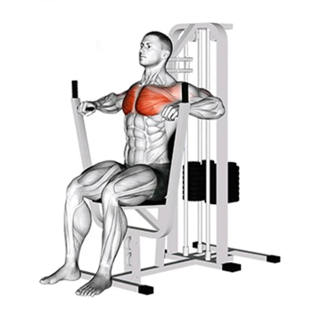

Estrada do puxa ferro, 12
Estrada do puxa ferro, 12
Tel: (21) 91234-5678
contato@halterhabit.com.br
Estrada do puxa ferro, 12
| Alguns dos Nossos Equipamentos | ||
|---|---|---|

|
Cadeira Extensora | |
| O principal movimento articular realizado na cadeira extensora é a extensão de joelho, portanto o quadríceps (vasto lateral, vasto medial, vasto intermédio e reto femoral) são os principais músculos trabalhados durante o exercício. [Fonte] | ||
| Supino Vertical |  | |
| supino vertical ou chest press machine, é um exercício de treinamento de força eficaz para desenvolver os músculos do peito, ombros e tríceps. Ao usar uma máquina de peso guiada, este exercício oferece um método controlado e acessível para melhorar a força e o tamanho da parte superior do corpo. Vamos explorar uma explicação passo a passo de como executar corretamente o supino na máquina. [Fonte] | ||

|
Remada Baixa com Triângulo | |
| A remada baixa é um exercício de máquina para costas feito sentado no banco usando a barra triângulo. A remada trabalha inúmeros músculos como o lombar, latíssimo do dorso, trapézio, deltóide posterior e até mesmo o braquiorradial. [Fonte] | ||